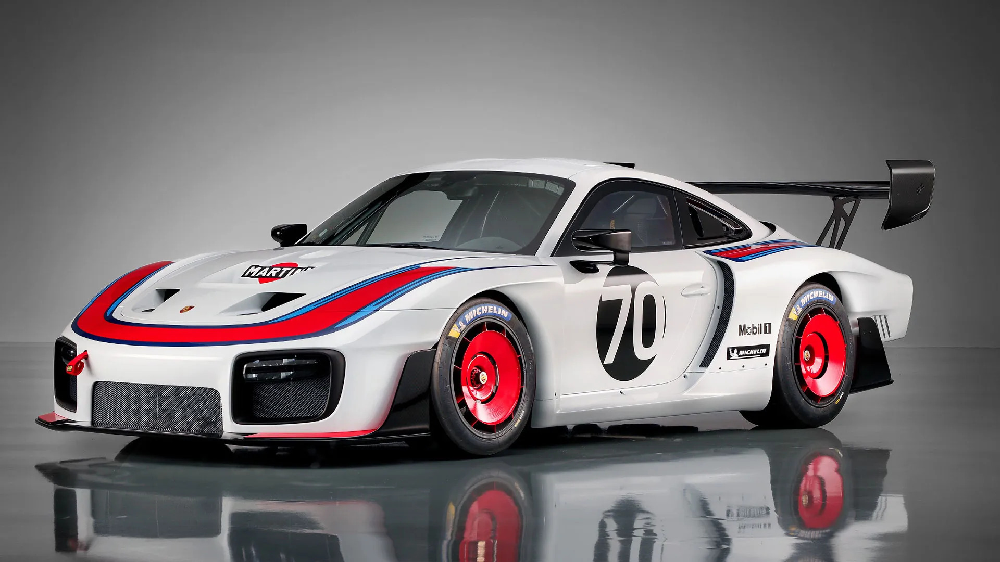

O Porsche 935 de 2018 é uma edição comemorativa e muito limitada, baseada no 911 GT2 RS. Foi apresentado em setembro de 2018, em Laguna Seca, nos Estados Unidos, como homenagem ao famoso 935/78 "Moby Dick". É um carro só para pista, não pode circular na estrada.

| Base | Porsche 911 GT2 RS |
| Motor | Boxer de 6 cilindros, 3.8 L, com dois turbos |
| Potência | Cerca de 700 cv |
| Transmição | PDK de 7 mudanças |
| Unidades produzidas | 77 |
| Utilização | Apenas em pista (illegal para rua) |